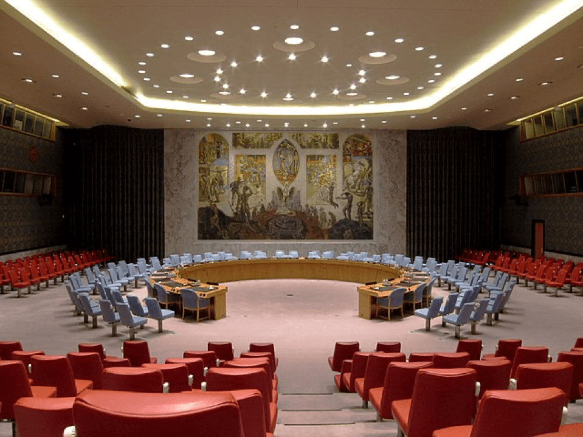

Wikipedia preview demo site


Conseil de sécurité des Nations unies
Le Conseil de sécurité des Nations unies est l'organe exécutif de l'Organisation des Nations unies (ONU). Il est défini comme ayant « la responsabilité principale du maintien de la paix et de la sécurité internationale » selon la Charte des Nations unies et dispose pour cela de pouvoirs spécifiques tels que le maintien de la paix, l'établissement de sanctions internationales et l'intervention militaire.
Certaines décisions, appelées résolutions, du Conseil de sécurité ont force exécutoire et « les Membres de l'Organisation conviennent d'accepter et d'appliquer les décisions du Conseil de sécurité ». Il se réunit au siège des Nations unies à New York après avoir siégé dans différentes capitales, telles que Paris ou Addis-Abeba. Ses membres doivent y être présents en permanence, du fait que le Conseil peut être réuni à tout moment, notamment en cas de crise exceptionnelle, ce que ne permettait pas la Charte de la Société des Nations.
Le Conseil de sécurité est composé de quinze membres : cinq permanents pourvus du droit de veto (Chine, États-Unis, France, Royaume-Uni, Russie) et dix élus pour une durée de deux ans (renouvelés par moitié tous les ans).